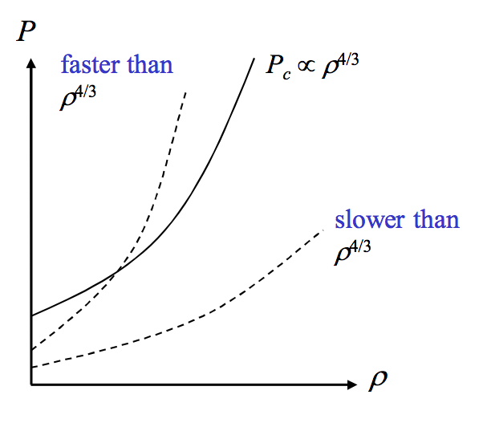
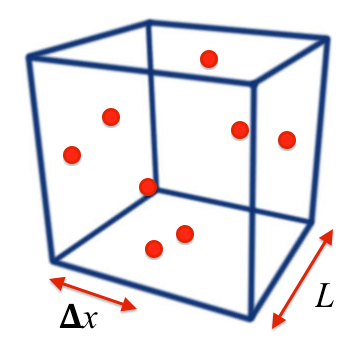
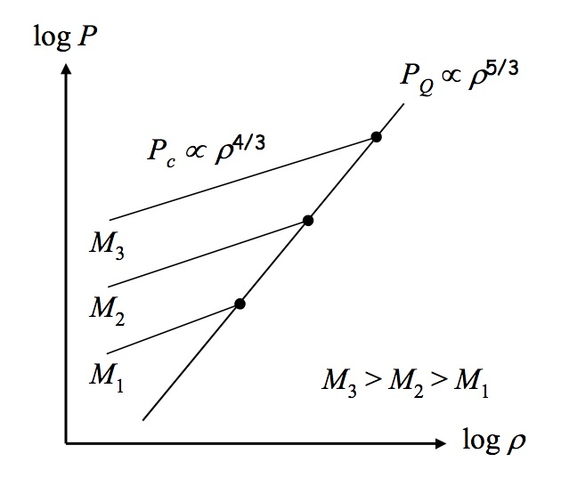

9 Stellar fates
| ZAMS mass | Collapsing mass | Fate |
|---|---|---|
| \(\lesssim 8\,M_\odot\) | \(1.4\,M_\odot\) | white dwarf |
| \(8 - 25 M_\odot\) | 1.4 - 3 \(M_\odot\) | Neutron Star |
| \(\gtrsim 25 M_\odot\) | \(\gtrsim 3 M_\odot\) | Black Hole |
- What keeps a White Dwarf star or Neutron Star from collapsing due to gravity?
Remember that no further energy can be obtained from nuclear fusion!
9.1 Example: White Dwarf stars
- The typical size of the collapsed core is \(\sim R_{\oplus}\) \(\rightarrow\) leading to average densities \(>4\times 10^{6}\) that of the sun.
- Acceleration due to gravity at the surface of a White Dwarf is \(\sim 5\times 10^{6}\,\text{m s}^{-2}\).
- A teaspoon of White Dwarf material would weigh the equivalent of 16 tons!
- In the gravitational field of the white dwarf it would be \(8\times 10^{6}\) tons!
10 Degenerate Matter
10.1 Key players - 1926
Wolfgang Pauli: Nobel prize 1945, ``Not even wrong’’
Sir Ralph Howard Fowler: Paul Dirac’s PhD supervsior (Dirac and Schrodinger Nobel Prize 1933)
Werner Karl Heisenberg: Nobel prize 1932
10.2 The Pauli exclusion principle
- Allows at most one fermion (particle with 1/2 integer spin), such as an electron or neutron, to occupy a given quantum state since no two fermions can have the same set of quantum numbers.
- At zero temperature, all of the lower energy states and none of the higher states are occupied \(\rightarrow\) completely degenerate.
10.3 The Heisenberg uncertainty principle
\[ \Delta x\Delta p_x \approx \hbar\nonumber \]
This means that a particle confined to a smaller and smaller volume of space will have a corresponding larger and larger uncertainty in its momentum.
Note that \(\hbar\) is Planck’s constant (\(h=6.626\times 10^{-34}\) Js) divided by \(2\pi\).
11 Degeneracy pressure
11.1 A simplified model
For simplicity, we consider a uniform spherical mass \(M\) of radius \(R\) and density \(\rho\): \[\begin{equation} \rho=\frac{M}{V}=\frac{M}{\frac{4}{3}\pi R^{3}}\nonumber \end{equation}\]
This mass is composed of free electrons and protons (i.e. not bound together in atoms) with mass \(m_{\text{e}}\) and \(m_{\text{p}}\) respectively. These each have a number density \(n_{\text{e}}\) and \(n_{\text{p}}\), and since there is charge-balance, \(n_{\text{e}} = n_{\text{p}} = n\). Therefore \[\begin{equation}\label{eq:numberdens} \rho=n_{\text{e}}m_{\text{e}} + n_{\text{p}}m_{\text{p}}\approx nm_{\text{p}}\nonumber \end{equation}\] since \(m_{\text{e}}\ll m_{\text{p}}\).
From hydrostatic equilibrium (see SP 1) we know that the central pressure \(P_{\text{c}}\) required to support a body against its own self-gravity is given by
\[\begin{align} P_{\text{c}}&=\frac{4 \pi}{3} G\rho^{2} \frac{R^{2}}{2} \\ &={\left(\frac{\pi}{6}\right)^{1/3}GM^{2/3}\rho^{4/3}} \end{align}\]
[ Since \(\rho=M/(4/3)\pi R^3\) therefore \(R^{2}=(M/(4/3)\pi\rho)^{2/3}\) ].
- In the stellar remnant, this central pressure must be balanced by the cold pressure, which we call degeneracy pressure.
- This is fundamentally a quantum mechanical concept.
11.2 Density vs pressure

- As the density of the stellar remnant increases, the central pressure due to self-gravity \(P_{\text{c}}\) rises with density as \(\rho^{4/3}\).
- The degeneracy pressure will only be able to balance this central pressure if it also increases with density, and does so faster than \(\rho^{4/3}\).
11.3 Back to the simplified model

- Let us consider a cubic metre of particles. If the number density is \(n\), then this cube contains \(n\) particles.
- By the Pauli exclusion principle the particles must maintain their identities as different particles \(\rightarrow\) The uncertainty in their positions cannot be larger than their physical separation.
If the typical spacing between each particle is \(\Delta x\), then each particle typically `occupies’ a volume of \(\langle V\rangle=(\Delta x)^{3}\), and
\[\begin{align} \Delta x &= \frac{1}{n^{1/3}}, \\ n &= 1/{\langle V\rangle} \nonumber \end{align}\]
Therefore, by the Heisenberg Uncertainty Principle each particle has a momentum in the \(x\)-direction of \[\begin{equation} p_{x}\approx\frac{\hbar}{\Delta x}\approx\hbar n^{1/3}\approx\hbar\left(\frac{\rho}{m_{\text{p}}}\right)^{1/3}\nonumber \end{equation}\] where we consider stationary, cold particles, with no thermal motion.
For non-relativistic particles (i.e. particle speed \(v\ll c\)), the average kinetic energy of the particle is given by \[\begin{equation} \langle E \rangle = \frac{1}{2}m\langle v^{2}\rangle =\frac{\langle mv\rangle ^{2}}{2m}=\frac{\langle p^{2}\rangle }{2m}=\frac{3\langle p_{x}^{2}\rangle }{2m}\nonumber \end{equation}\] where the non-relativistic particle momentum is \(p=mv\) and \(\langle\ldots\rangle\) indicates an average. Also \(p^{2} = p_{x}^{2}+p_{y}^{2}+p_{z}^{2}\) therefore \(\langle p^{2}\rangle = 3\langle p_{x}^{2}\rangle\).
Therefore the average quantum (or Fermi) energy of an electron is given by \[\begin{equation}\label{eq:eenergy} {\langle E_{\text{e}}\rangle = \frac{3\hbar^2}{2m_{\text{e}}}\left(\frac{\rho}{m_{\text{p}}}\right)^{2/3}}\nonumber \end{equation}\]
and for a proton by \[\begin{equation}\label{eq:penergy} {\langle E_{\text{p}} \rangle = \frac{3\hbar^{2}}{2m_{\text{p}}}\left(\frac{\rho}{m_{\text{p}}}\right)^{2/3}}\nonumber \end{equation}\]
Note some important properties of these equations - They are only valid for non-relativistic particles. - Since \(m_{\text{e}}\ll m_{\text{p}}\) we see that $E_{}E_{}$ and we will show that electron pressure dominates over proton pressure for White Dwarf stars.
12 Pressure and kinetic energy
To find the degeneracy pressure, consider the work done by changing the volume of a box by an infinitesimal amount \(d x\). Pressure produces a force over the area of a face \(A\), which changes the internal energy by: \[\begin{align*} d E & = - F d x \\ d E & = - (P A) d x \end{align*}\]
\(A d x = dV\) is an infinitesimal change in the volume of the box, so we can write
\[\begin{align*} d E &= - P d V \\ P& = - \frac{d E}{d V} \end{align*}\] Pressure is a measure of energy per volume.
Pressure is a macroscopic quantity, but we can relate it to the quantum mechanics of degeneracy pressure by considering the average kinetic energy per particle \(\langle E \rangle\) and volume per particle \(\langle V \rangle\). \[\begin{align*} P&= -\frac{d \langle E \rangle}{d \langle V \rangle} \end{align*}\] We can now use \({\langle V \rangle}^{-1}=\rho / m_p\) to relate this to the particle energies \(\langle E_e \rangle\) and \(\langle E_p \rangle\).
12.1 For electrons
Energy is \[\begin{align*} \langle E_e \rangle = \frac{3\hbar^2}{2m_e}\left(\frac{\rho}{m_p}\right)^{2/3} = \frac{3\hbar^2}{2m_e}{\langle V \rangle}^{-2/3} \nonumber \end{align*}\] and so the partial pressure \(P_{Qe}\) is \[\begin{align*} P_{Qe}&= -\frac{3\hbar^2}{2m_e}\frac{d {\langle V \rangle}^{-2/3}}{d {\langle V \rangle}} \\ &= -\frac{3\hbar^2}{2m_e} \times -\frac{2}{3}{\langle V \rangle}^{-5/3} \\ &= \frac{\hbar^2}{m_e}\left(\frac{\rho}{m_p}\right)^{5/3} \end{align*}\]
## And for protons: \[\begin{align*} P_{Qp}= \frac{\hbar^2}{m_p}\left(\frac{\rho}{m_p}\right)^{5/3}. \end{align*}\] In other words, we have \(P = \frac{2}{3}n\langle E \rangle\).
\[\begin{align*} P_{Qe}= \frac{\hbar^2}{m_e}\left(\frac{\rho}{m_p}\right)^{5/3} \quad \quad P_{Qp}= \frac{\hbar^2}{m_p}\left(\frac{\rho}{m_p}\right)^{5/3} \end{align*}\]
12.2 Considerations
Note that \(T\) does not appear anywhere in either equation implying that a finite temperature is not required to provide this source of pressure – it is indeed a cold pressure.
Note also that the degeneracy pressure varies with density as \(\rho^{5/3}\). This is faster than self-gravity, for which \(P_{\text{c}} \propto \rho^{4/3}\). So for some value of the density, the degeneracy pressure will become large enough to balance the central pressure due to self-gravity.
13 Visualising the pressure balance
A useful approach we can use is to take logs of our pressure equations such that, for the electron degeneracy pressure where \(P_{\text{Qe}}\propto \rho^{5/3}\), we have \[\begin{align} \log(P_{\text{Qe}}) &= \log(\rho^{5/3}) + \text{constant}\nonumber\\ &=\frac{5}{3}\log(\rho) + \text{constant}\nonumber. \end{align}\]
For the central pressure due to self-gravity where \({P_{\text{c}}\propto \rho^{4/3}M^{2/3}}\) we have \[\begin{align} \log(P_{\text{c}}) &= \log(\rho^{4/3}) + \log(M^{2/3}) + \text{constant}\nonumber\\ &=\frac{4}{3}\log(\rho) + \left(\frac{2}{3}\log(M) + \text{constant}\right). \end{align}\] These equations define straight lines in log space (\(y = mx + c\)).

- The constant depends on the stellar remnant’s mass, hence the same slope but different intercepts.
- For each mass a different value of \(\rho\) is needed to balance \(P_{\text{c}}\).
- Higher masses lead to higher central pressures which then require higher densities.